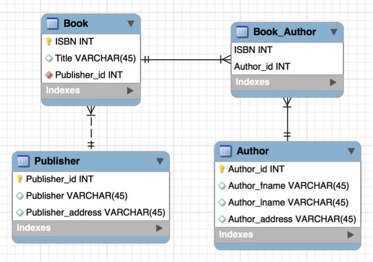

8 How Do We Design a Database?
Database Design
With database design we are trying to organize the data in such a way that redundancy is minimized without losing any data. Redundancy is when we repeat the same data more than once. For example, each time a student registers for a class their name and address might be repeated for each class in which they are registered. Another way you might have repeating data is if you have a list of those same students and their addresses in a separate file listing parking passes or ticket violations. Say the student’s address changes, then changing the address would mean editing in different locations; not only in multiple places in registration, but also in a different file at the parking office. There is a greater chance of making a data entry mistake when you must edit in multiple places. It takes more time and resources as well. Having multiple copies of information also increases the chances for unauthorized access to data that should be secure.
Good design also means our data should be accurate and reliable. Setting up constraints on our data is a good way to ensure it has integrity and is consistent. We learned about what data integrity and data consistency were earlier and now we will see this in action as we design a database.
For relational database design, reducing redundancy means splitting the data up into separate entities or tables to minimize redundancy. But it is not always clear how to do this, especially with large ‘real-life’ databases. Database design can be complex. You may not be the person who will design a database, usually this is the database administrator, but knowing the proper way to design a database will help you understand the structure of the database you work with.
The Statement of Work
It is wise to start with determining what output is needed and work backwards from there to determine what data is even going to be used in the database. As you analyze the needs of the business you can determine what is needed for the database. This may require a lengthy time period to accomplish. Remember this process can begin with the Statement of Work (SOW) that was covered earlier. A SOW is a document that describes the work that needs to be done on a project. It can help clarify the project for both the users and the database designer.
Basic Steps for Proper Design
Relational databases model real-world environments. The designer must analyze the real-world system and design it into a relational database.
A data model organizes data and standardizes how the data relate to each other. The purpose of the model is to show the data needed and created by business processes. The data model determines the structure of data and the relationships and constraints of the data.
Let’s look at an example of designing for a system that uses books and their associated information as output. Here’s a flat file showing all the data that is needed for the system:
| ISBN | Title | Author | Author Address | Publisher | Publisher Address |
|---|---|---|---|---|---|
| 1-1111-1111-1 | Intro to Databases | Sue Smith | 123 Street | Acme Publishing | 60 Main Street |
| 2-2222-2222-2 | Database Design | John Jones | 44 Fourth Ave | Frontier Inc | 25th N 700 E |
| 3-3333-3333-3 | Data Retrieval | Sue Smith | 123 Street | Budd Publisher | 345 Allen Blvd |
| 4-4444-4444-4 | Data Types | Tim, Thomas, John Jones | 67 E Bird Blvd, 44 Fourth Ave | Acme Publishing | 60 Main Street |
| 5-5555-5555-5 | Queries for Fun | Mary Miller | 32 Launa Dr | Perfect Inc | 309 Wish Way |
Each book is listed with the international standard book number (ISBN), title, author, and publisher. For relational databases, one table in the database will represent one entity in the real world with each row being one instance of that entity and one column storing an attribute associated with that entity.
Step 1 - Each table should be only one real-world entity.
Step 2 - Identify primary and foreign keys.
Step 3 - Make sure the data is normalized.
In the table above, there are 3 different entities: books, authors and publishers. In the table, we see some of the authors and publishers are repeated. Remember we want to eliminate redundancy.
In the table above, the first two columns belong to the real world entity of books. The next two columns belong to the entity of author, and the last two columns belong to the entity of publisher. If we separate the data into 3 tables, we can eliminate the redundancy and have Sue Smith and Acme Publishing listed only once.
| ISBN | Title |
|---|---|
| 1-1111-1111-1 | Intro to Databases |
| 2-2222-2222-2 | Database Design |
| 3-3333-3333-3 | Data Retrieval |
| 4-4444-4444-4 | Data Types |
| 5-5555-5555-5 | Queries for Fun |
| Author | Author Address |
|---|---|
| Sue Smith | 123 Street |
| John Jones | 44 Fourth Ave |
| Tim Thomas | 67 E Bird Blvd |
| Mary Miller | 32 Launa Dr. |
| Publisher | Publisher Address |
|---|---|
| Acme Publishing | 60 Main Street |
| Frontier Inc | 25th N 700 E |
| Budd Publisher | 345 Allen Blvd |
| Perfect Inc | 309 Wish Way |
Differentiating between entities and attributes within those entities, can be tricky sometimes. For example, maybe we find that we want to store both of the author’s home address and work address. Suddenly the address attributes of the author’s table would become a separate table called Author Address with a foreign key that relates to the author’s primary key. You will ultimately make these decisions based on what output is needed from the database. For now we will leave the entities as they are.
The book entity already has a great natural key that uniquely identifies each book; the ISBN. But there is a possibility of two different authors having the same name or even publishing companies having the same name, so we need a unique primary key for each of those tables. Here they have been assigned surrogate keys for the primary keys. A surrogate key is a key that the system automatically assigns to each row to each row unique.
| Author ID | Author | Author Address |
|---|---|---|
| 22 | Sue Smith | 123 Street |
| 23 | John Jones | 44 Fourth Ave |
| 24 | Tim Thomas | 67 E Bird Blvd |
| 25 | Mary Miller | 32 Launa Dr. |
| Publisher ID | Publisher | Publisher Address |
|---|---|---|
| 001 | Acme Publishing | 60 Main Street |
| 002 | Frontier Inc | 25th N 700 E |
| 003 | Budd Publisher | 345 Allen Blvd |
| 004 | Perfect Inc | 309 Wish Way |
Let’s look at the relationships of the entities now, which will help us establish the foreign keys. The relationship between Publishers and Books is one to many. A book belongs to one publisher and a publisher can publish many books. The foreign key will be located in the table with the many part of the relationship. So the primary key of Publisher becomes a foreign key of Books. Notice how Acme Publishing, 001 is listed multiple times as a foreign key in the Book table. They are the publisher for two different books, “Intro to Databases” and “Date Types”.
| ISBN | Publisher ID | Title |
|---|---|---|
| 1-1111-1111-1 | 001 | Intro to Databases |
| 2-2222-2222-2 | 002 | Database Design |
| 3-3333-3333-3 | 003 | Data Retrieval |
| 4-4444-4444-4 | 001 | Data Types |
| 5-5555-5555-5 | 004 | Queries for Fun |
| Publisher ID | Publisher | Publisher Address |
|---|---|---|
| 001 | Acme Publishing | 60 Main Street |
| 002 | Frontier Inc | 25th N 700 E |
| 003 | Budd Publisher | 345 Allen Blvd |
| 004 | Perfect Inc | 309 Wish Way |
The Books and Authors tables have a many-to-many relationship; each book can have many authors, and each author can write many books. Therefore, there will be a linking table between the two tables to resolve the many-to-many into 2 one-to-many relationships. The linking table will have the foreign keys made up of each primary key of the other tables. So in our linking table we have a composite primary key, meaning two attributes together ensure each row is unique. Together these two foreign keys make up the primary key of the linking table. We have author ID 22 repeated a few times and ISBN 4-4444-4444-4 repeated a few times but when we put each foreign key together with the other foreign key they uniquely identify each row. No two rows have both those attributes together exactly the same. We can see the many-to- many being resolved here. Sue is the author of multiple books and the book ‘Data Types’ has two authors. And it is all designed properly now for a relational database.
| ISBN | Publisher ID | Title |
|---|---|---|
| 1-1111-1111-1 | 001 | Intro to Databases |
| 2-2222-2222-2 | 002 | Database Design |
| 3-3333-3333-3 | 003 | Data Retrieval |
| 4-4444-4444-4 | 001 | Data Types |
| 5-5555-5555-5 | 004 | Queries for Fun |
| ISBN | Author ID |
|---|---|
| 1-1111-1111-1 | 22 |
| 2-2222-2222-2 | 23 |
| 3-3333-3333-3 | 22 |
| 4-4444-4444-4 | 23 |
| 4-4444-4444-4 | 24 |
| 5-5555-5555-5 | 25 |
| Author ID | Author | Author Address |
|---|---|---|
| 22 | Sue Smith | 123 Street |
| 23 | John Jones | 44 Fourth Ave |
| 24 | Tim Thomas | 67 E Bird Blvd |
| 25 | Mary Miller | 32 Launa Dr. |

Separating the data into real-world entities and establishing relationships and reducing redundancy are is part of normalizing the data. But there are a standard set of steps to follow to ensure your data is normalized.
There are 7 normal forms that must be applied in order. Our course covers the first 3 normal forms.
First Normal Form (1NF) - The value stored at the intersection of each row and column must be a scalar value, and the table must not contain any repeating columns. Scalar means – being described as a single value that might belong to a number of fields, but itself is one value. The table should also have a primary key.
Second Normal Form (2NF) - Every non-key column must depend on the entire primary key. This normal form has to do with composite keys where each field in the row has to rely on both parts of the composite primary key.
Third Normal Form (3NF) - Every non-key column must depend only on the primary key. Like 2NF but now we are looking at only the one part primary key.
By following normalization rules (or normal forms) we reduce data redundancy. The attributes of each entity are organized in a way that increases data consistency.
Normalization can slow performance and sometimes data is denormalized to improve this performance. Denormalizing can ignore some normal forms if the organization see this as a benefit to the system.
Create Statements
The CREATE TABLE statement allows you to create a new table in a database.
The basic syntax of a CREATE TABLE statement is as follows
CREATE TABLE table_name (
column1 datatype constraints,
column2 datatype constraints,
column3 datatype constraints,
...
columnN datatype constraints
);- table_name: is the name for the table you create
- column1, column2, column3, ... columnN: are the names of the columns in the table
- datatype: is the data type of the column, such as VARCHAR, INT, and DATE
- constraints: are the constraints for the column, such as NOT NULL, UNIQUE, and PRIMARY KEY
Here is an example of a CREATE TABLE statement that creates a table called students with three columns: id, name, and age.
CREATE TABLE students (
id INT PRIMARY KEY,
name VARCHAR(50) NOT NULL,
age INT NOT NULL
);This statement creates a table called students with three columns: id, name, and age. The id column is the primary key for the table, and it is of type INT. The name column is of type VARCHAR(50), and it cannot be NULL. The age column is of type INT, and it cannot be NULL.
MySQL DROP Statement
The DROP statement in MySQL is used to permanently delete a database, table, or column. Be cautious when using this command, as it cannot be undone.
Dropping a Database
To delete an entire database, use the following command:
DROP DATABASE database_name;Dropping a Table
To remove a table along with all its data:
DROP TABLE table_name;Dropping a Column
To delete a column from a table, use:
ALTER TABLE table_name DROP COLUMN column_name;Example
Suppose we have a database named college_db and a table named students. Here’s how you can drop them:
Deleting the Database
DROP DATABASE college_db;Deleting the Table
DROP TABLE students;Deleting a Column from the Table
ALTER TABLE students DROP COLUMN age;Note: Always double-check before using the DROP statement, as it permanently removes data.